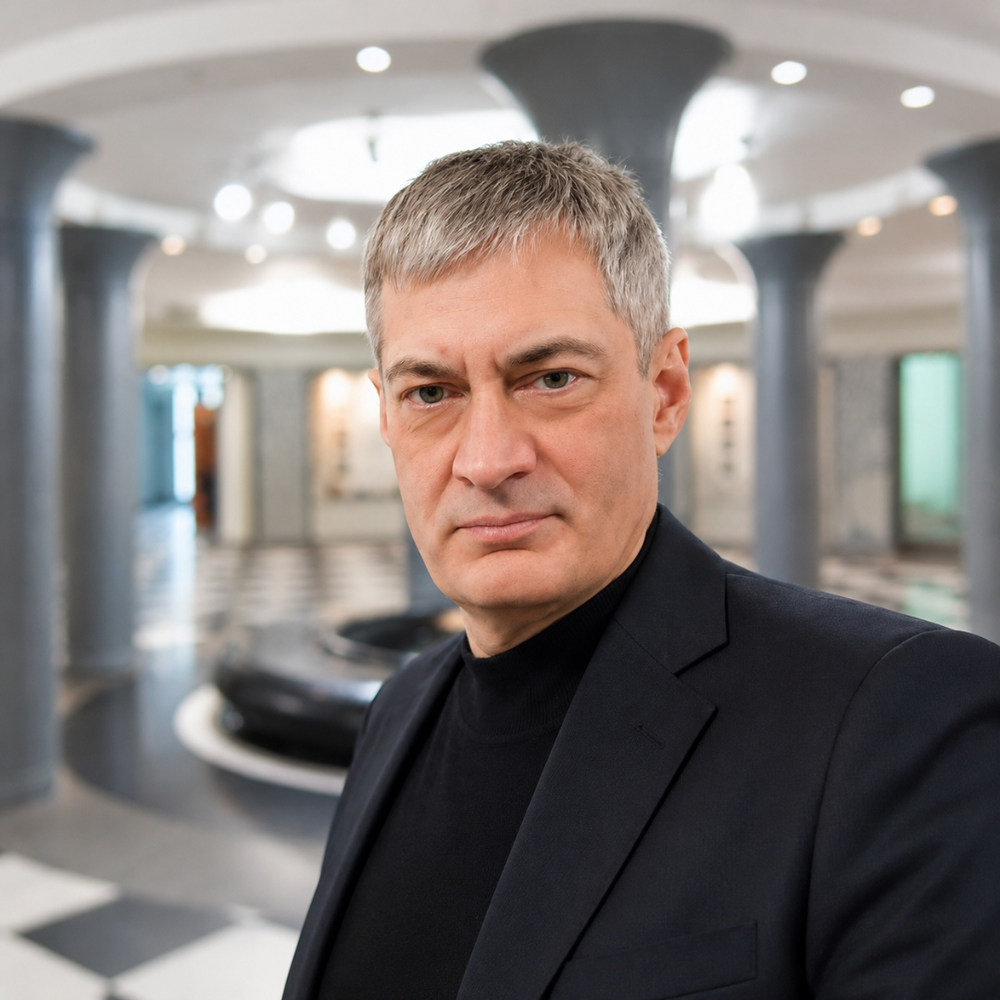
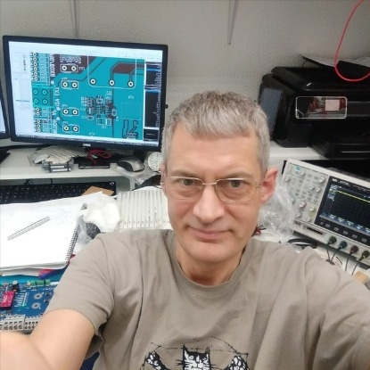
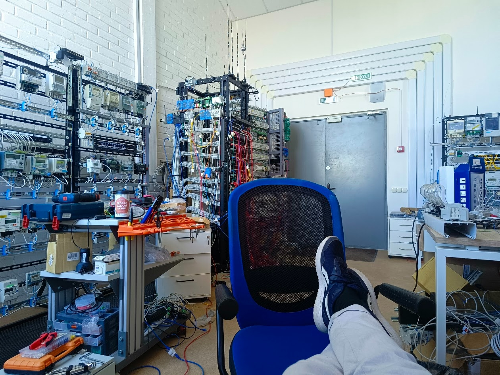
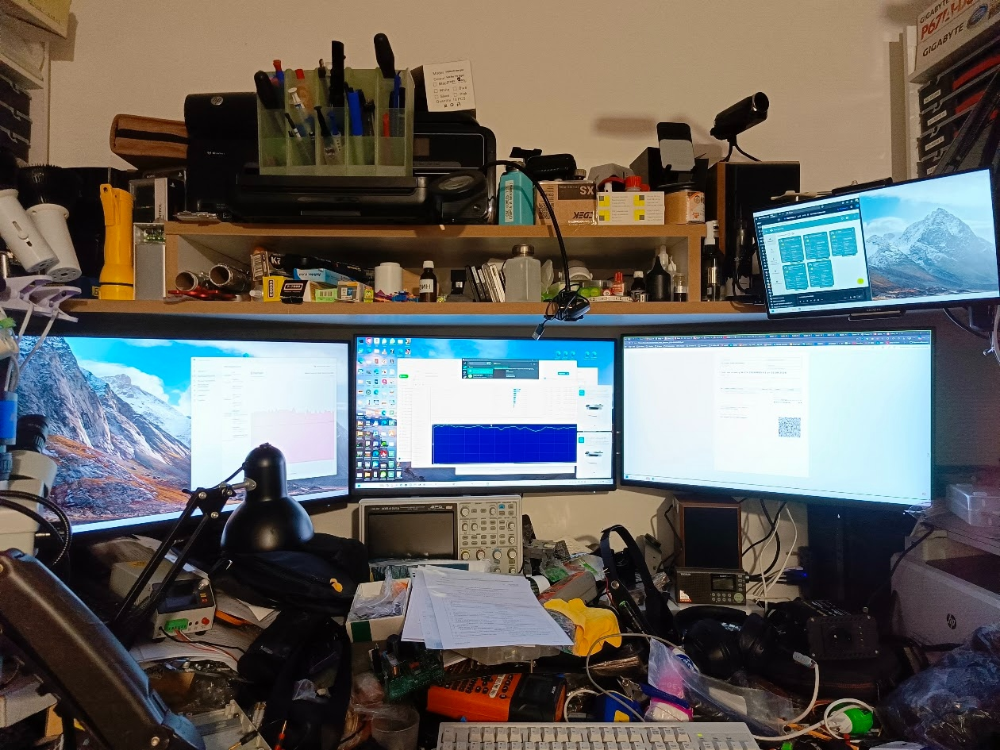
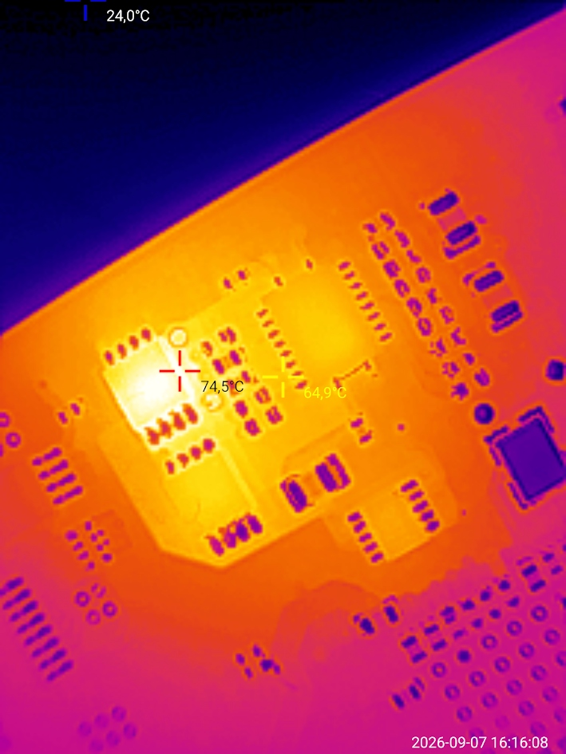
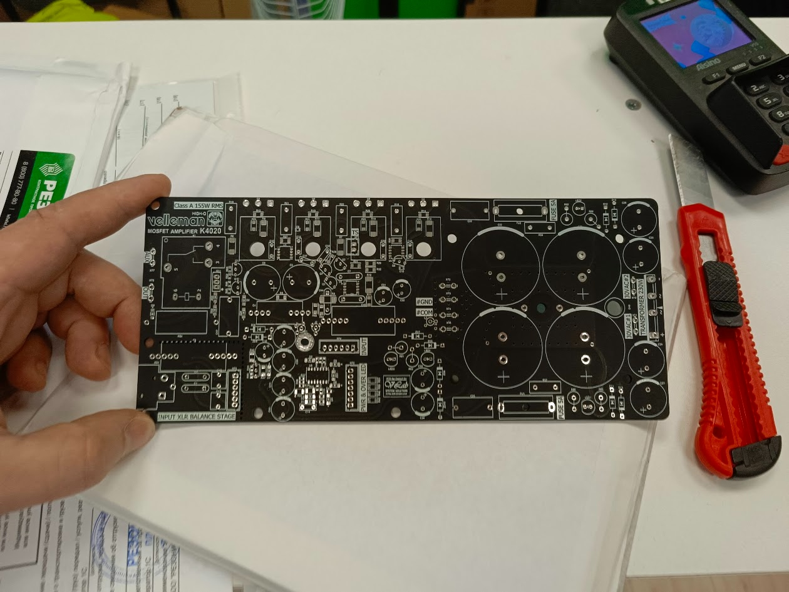

Инженерная разработка
[Роль, организация или направление; период; 1–2 ключевых результата.]
Частная инженерная практика в области радиоэлектроники, измерительных систем, программно-аппаратной автоматизации и технических исследований.

[Здесь будет короткий текст о миссии: какие задачи вы считаете важными, какие принципы применяете в работе и какой результат хотите давать заказчикам и партнёрам.]

[Здесь будет вводный абзац о вас, специализации и характере инженерных задач.]
[Здесь можно описать компетенции: аналоговую и силовую электронику, печатные платы, измерительную технику, сети, серверную инфраструктуру.]
[Добавьте несколько строк о рабочем подходе, внимании к документации, проверкам и жизненному циклу изделия.]
[Кратко опишите профессиональный путь, ключевые направления и наиболее значимые этапы.]
[Роль, организация или направление; период; 1–2 ключевых результата.]
[Роль, организация или направление; период; 1–2 ключевых результата.]
[Текущая специализация, формат сотрудничества и приоритетные задачи.]
[Расскажите о лаборатории: измерительных приборах, возможностях монтажа и отладки, программной среде, типовых исследованиях.]



[Этот раздел ведёт на отдельную страницу с карточками проектов. В ней можно объединить технические отчёты, фотографии, исходные данные, схемы, результаты измерений и выводы.]
Перейти к проектам →
[Краткое описание будущей библиотеки: документация, калькуляторы, заметки, подборки ссылок, шаблоны и технические материалы.]
[Статьи, datasheet-подборки, стандарты и справочные материалы.]
Открыть библиотеку →[Калькуляторы, таблицы, небольшие утилиты и шаблоны.]
Открыть инструменты →[Наблюдения, результаты испытаний и рабочие конспекты.]
Открыть заметки →Три самостоятельных раздела для личных материалов, экспериментов и заметок.